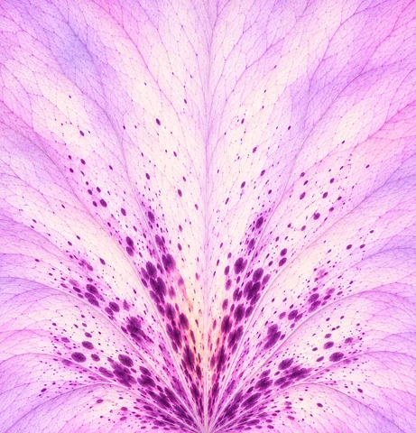
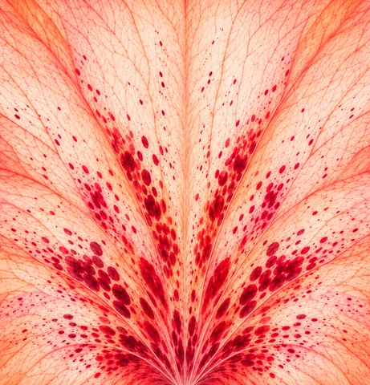

QUELEC · SUBLIMACIÓN
Artes de las colas de pavo
Las dos gamas de los abanicos de orquídea, en JPG original para sublimación.
Colas de pavo
Lienzo de aprox. 480 × 500 cm · 28.346 × 29.528 px · 150 ppp · sRGB


Las dos gamas de los abanicos de orquídea, en JPG original para sublimación.
Lienzo de aprox. 480 × 500 cm · 28.346 × 29.528 px · 150 ppp · sRGB

